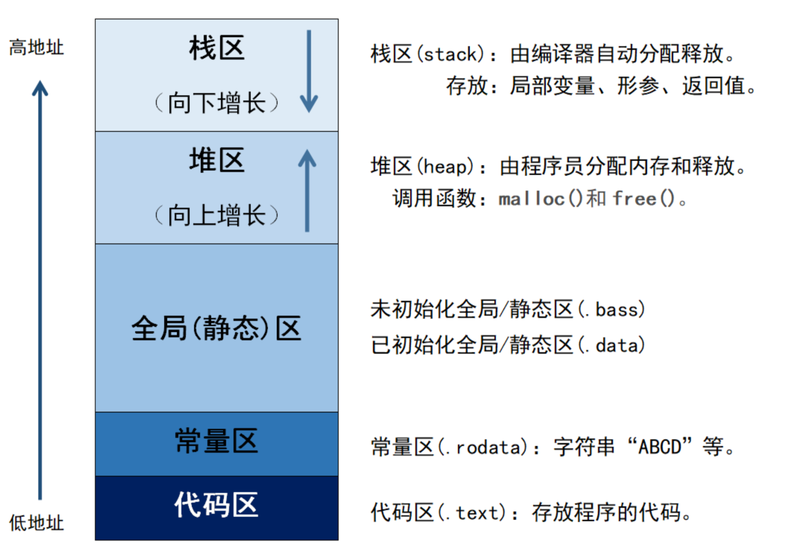

Linux BSP 面试题总结（基础篇）
一、C 语言基础
1. volatile 关键字详解
答：
volatile 告诉编译器：该变量的值可能被「编译器无法预知」的方式改变，每次访问都必须从内存重新读取，禁止优化到寄存器中
1 |
|
典型反例（不加 volatile 的后果）：
1 | // 假设想让 LED 闪烁 |
2. 内存分区

| 区域 | 管理方式 | 生长方向 | 存放内容 |
|---|---|---|---|
| 栈（Stack） | 编译器自动分配释放，LIFO，速度快 | 高→低 | 局部变量、const 局部变量、函数参数/返回值 |
| 堆（Heap） | 程序员 malloc/free 管理，速度较慢但自由 |
低→高 | 动态分配的内存，需手动释放否则内存泄漏 |
| 全局区（静态区） | 编译时确定，程序运行期间存在，可读写 | — | .data段：已初始化全局/静态变量；.bss段：未初始化（或初始化为0）的全局/静态变量，不占可执行文件空间 |
| 常量区 | 编译时确定，只读 | — | 字符串、数字、const 修饰的全局变量 |
| 代码区 | 编译时确定，只读 | — | 程序可执行代码、#define 宏可能存放于此 |
3. 进程与线程的核心区别与通信方式
| 对比项 | 进程（Process） | 线程（Thread） |
|---|---|---|
| 资源拥有 | 独立的地址空间、文件描述符、信号处理 | 共享进程的地址空间和资源 |
| 调度单位 | 进程是资源分配单位 | 线程是 CPU 调度单位 |
| 切换开销 | 大（需要切换页表、刷新 TLB） | 小（共享地址空间，无需切换页表） |
| 通信方式 | 需要 IPC（见下方） | 直接共享全局变量、堆内存 |
| 独立性 | 高，一个进程崩溃不影响其他进程 | 低，一个线程崩溃可能导致整个进程崩溃 |
| 创建开销 | fork() 开销大 | pthread_create() 开销小 |
进程间通信（IPC）方式：
| 方式 | 特点 | 使用场景 |
|---|---|---|
| 无名管道（pipe） | 单向流，父子进程用 | 简单数据传输 |
| 有名管道（FIFO） | 无亲缘关系进程也可用 | 不同进程间通信 |
| 信号（signal） | 异步通知，信息量少 | 通知事件（如 SIGTERM） |
| 共享内存（shm） | 最快，直接读写内存 | 大批量数据交换 |
| 信号量（semaphore） | 同步/互斥访问共享资源 | 进程间同步 |
| 消息队列（msgqueue） | 消息传递，内核管理 | 结构化消息通信 |
| Socket | 跨网络通信 | 不同主机间通信 |
| Netlink | 内核与用户空间通信 | 内核态与用户态双向通信 |
内核中的线程：
kthread_create()/kthread_run()：创建内核线程- 内核线程没有独立的地址空间（mm = NULL），共享内核地址空间
- 内核线程不可切换到用户态
4. 链表操作
答： 内核中大量使用双向链表（list_head），而非自定义链表结构：
1 | // 内核链表结构 |
设计优点： list_head 内嵌而非外挂，通过 container_of 宏从链表节点反推出结构体首地址，避免了为每种数据类型写一套链表操作。
5. 常用 C 语言问题
5.1 static 关键字的作用
1 | // 1. 修饰局部变量：生命周期变为整个程序运行期，但作用域不变 |
5.2 const 修饰指针
1 | const int *p; // 指向的内容只读：*p 不可改，p 可改（常量指针 → 常量的指针） |
记忆口诀：const 在 * 左边 → 内容只读；const 在 * 右边 → 指针只读。
5.4 字节对齐
1 | // 结构体默认对齐：按最大成员对齐，可能有填充（padding） |
追问： 为什么需要对齐？未对齐访问在 ARM 上会怎样？
为什么需要对齐：
- CPU 硬件要求：许多 CPU 的 load/store 指令要求地址对齐，否则直接抛硬件异常
- 性能：即使 CPU 支持非对齐访问，也需要多次总线操作来拼接数据，比对齐访问慢 2~3 倍
- 原子性破坏：跨 cache line（如 4 字节变量横跨两个 64 字节 cache line）时，单次读写变成两次总线操作，无法保证原子性
5.5 大端小端
1 | // 小端（Little Endian）：低字节在低地址（x86、ARM 默认小端） |
内核中常用 __cpu_to_le32() / le32_to_cpu() 系列宏做字节序转换。
6. 并发与锁
6.1 什么是死锁？如何避免？
答： 两个或多个线程互相等待对方持有的锁，导致全部阻塞。
死锁四个必要条件（缺一不可）：
- 互斥：资源只能被一个线程占用
- 持有并等待：持有锁的同时等待其他锁
- 不可剥夺：已持有的锁不能被强制释放
- 循环等待：形成 A 等 B、B 等 C、C 等 A 的环路
1 | // 死锁示例 |
避免方法：
- 固定加锁顺序（所有线程按相同顺序获取锁）
- 使用
trylock+ 回退重试 - 减少锁的持有时间
- 使用 lockdep（内核死锁检测工具）辅助排查
6.2 锁的粒度如何权衡？
答：
| 粒度 | 优点 | 缺点 |
|---|---|---|
| 粗粒度（一把大锁） | 实现简单，不易死锁 | 并发度低，性能差 |
| 细粒度（多把锁，如每个结构体一把） | 并发度高，性能好 | 实现复杂，容易死锁 |
原则： 从粗粒度开始，用 profiling（perf、lock_stat）定位锁竞争热点，再对热点做细化。
注意： 读写锁本身有开销（维护读者计数），只有在读远多于写时才比 mutex 有优势。RCU 在读极多的场景下比读写锁更优。
二、Linux 内核基础
7. 内核态与用户态的区别？如何切换？
答：
- 用户态：权限受限，不能直接访问硬件，运行在虚拟地址空间
- 内核态：可以访问所有硬件资源，执行特权指令
- 切换方式：系统调用（
open/read/ioctl）、异常（缺页异常）、外设中断
追问： copy_from_user / copy_to_user 的作用？为什么需要这两个函数？
8. 系统调用流程
1 | 用户态应用程序 |
以 ARM64 为例：
1 | // 用户态调用 open() |
9. 字符设备驱动框架
答： 字符设备是 Linux 驱动中最基础的设备类型，核心四步：
1 | // 1. 分配主次设备号 |
追问： .owner = THIS_MODULE 的作用？（模块引用计数保护，防止在使用设备时模块被 rmmod）
11. 内核同步机制
| 机制 | 特点 | 适用场景 |
|---|---|---|
| 自旋锁（spinlock） | 忙等待，不睡眠 | 中断上下文、短临界区 |
| 信号量（semaphore） | 可睡眠 | 进程上下文、长临界区 |
| 互斥锁（mutex） | 可睡眠，优先级继承 | 进程上下文 |
| 原子操作（atomic_t） | 硬件级别保证 | 简单计数器、标志位 |
| RCU（Read-Copy-Update） | 读无锁 | 读多写少的场景 |
| 完成量（completion） | 同步等待事件 | 异步操作完成通知 |
追问： 自旋锁在单核 CPU 上还有效吗？为什么中断里不能用 mutex？
12. CPU 时间调度策略
答： Linux 内核支持多种调度策略，分为普通调度类和实时调度类：
1 | 调度策略分类： |
CFS（完全公平调度器）核心原理：
| 概念 | 说明 |
|---|---|
| vruntime（虚拟运行时间） | 每个进程的累积运行时间，按权重归一化 |
| 红黑树（RB-Tree） | 按 vruntime 排序，左子树 vruntime 小 |
| 挑选原则 | 每次选 vruntime 最小的进程运行（红黑树最左节点） |
| 权重（nice值） | nice -20 → 权重最大，vruntime 增长慢，获得更多 CPU |
| 调度周期 | 一个周期内所有可运行进程至少运行一次 |
| 最小粒度 | 单次最小运行时间（通常 0.75ms ~ 1ms） |
1 | 调度决策流程： |
优先级范围：
1 | nice值范围：-20（最高优先级） ~ +19（最低优先级） |
实际面试追问：
- CFS 为什么用红黑树而不是其他数据结构？（增删查 O(log n)，最左节点 O(1)）
- 什么是调度抖动（Jitter）？（调度延迟的不确定性，实时系统的大敌）
- Tickless（NO_HZ）模式是什么？（空闲时不产生定时中断，降低功耗）
- 什么是负载均衡（Load Balance）？（多核下如何把进程迁移到空闲 CPU）
- CFS 和 RT 调度类的关系？（RT 永远优先，可能导致普通进程饥饿）
- SCHED_FIFO 和 SCHED_RR 的区别？（FIFO 无限运行直到主动放弃，RR 有时间片轮转）
追问： 为什么不能把所有事情都在顶半部完成？（长时间关中断会导致系统响应延迟增大、丢失其他中断）
14. 中断下半部的几种机制的区别与适用场景
| 机制 | 实现基础 | 上下文 | 可睡眠 | 并发性 | 典型场景 |
|---|---|---|---|---|---|
| 软中断 softirq | 内核静态分配（NR_SOFTIRQS 个），编译时固定 |
中断上下文 | ❌ 不可睡眠 | 同类型可在多核并行执行 | 网络 RX/TX、块设备层、高吞吐场景 |
| tasklet | 基于 softirq（TASKLET_SOFTIRQ / HI_SOFTIRQ） |
中断上下文 | ❌ 不可睡眠 | 同类型串行，不会并行 | 小批量数据传递、GPIO 触发、简单 I2C/SPI 操作 |
| 工作队列 workqueue | 内核线程（kworker） |
进程上下文 | ✅ 可睡眠 | 可并行，系统自动管理 | 需要睡眠的操作（I2C 读写、GPIO 操作、内存分配） |
选择原则：
- 需要睡眠 → 必须用 workqueue
- 任务非常轻量、频繁触发 → softirq（如网卡收包）
- 轻量但不需要极致性能 → tasklet（简单，推荐）
- 需要高并发处理 → softirq 或 workqueue + 多 worker
追问： tasklet_schedule() 和 tasklet_hi_schedule() 的区别？workqueue 和 system_wq 的关系？
三、内存管理
15. 内核空间内存分配
答：
| 函数 | 特点 |
|---|---|
kmalloc() |
物理连续，大小有限，最快 |
kzalloc() |
kmalloc + 清零 |
vmalloc() |
虚拟连续，物理不连续，适合大内存 |
kmap() |
临时映射高端内存 |
ioremap() |
将物理地址映射到内核虚拟地址空间，用于访问硬件寄存器 |
GFP_KERNEL 和 GFP_ATOMIC 的使用场景：
| 标志 | 可睡眠 | 适用场景 | 注意事项 |
|---|---|---|---|
GFP_KERNEL |
✅ 是 | 进程上下文（系统调用、工作队列） | 可能睡眠等待内存回收，禁止在中断/自旋锁内使用 |
GFP_ATOMIC |
❌ 否 | 中断上下文、软中断、tasklet、自旋锁内 | 不会阻塞，分配失败立即返回 NULL |
四、面试准备建议
技术准备
- 深挖项目经验：选 2-3 个最有代表性的项目，把每个细节（为什么这么做、遇到了什么坑、怎么解决的）准备清楚
- 手写代码：能手写基本驱动框架（字符设备、I2C 驱动、设备树节点）
- 原理图阅读：能看懂基本原理图，指出 I2C/GPIO/MIPI 的连接关系
- 内核源码阅读：能说出你改过的某个内核函数的实现路径
针对目标公司
| 公司 | 侧重点 |
|---|---|
| 瑞芯微 | Linux 内核驱动、V4L2 Camera、MIPI、RK 平台 TRM 手册、多媒体框架 |
| 紫光展锐 | 手机平台 BSP、TrustZone、功耗优化、Modem 通信、Camera 3A |
| 高通 | 高通专属框架（QMI/CAMSS/RPM）、UEFI 启动、TrustZone、Debug 工具 |
反问环节（加分项）
- “贵公司目前使用哪个内核版本？是否有计划升级到最新 LTS？”
- “团队目前使用的 Camera 驱动框架是 V4L2 还是自研的？”
- “对于新入职的 BSP 工程师，一般会安排什么类型的 onboarding 项目？”
- “目前平台最大的功耗瓶颈在哪里？”